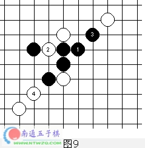

五子棋禁手规则及练习
#1 五子棋禁手规则及练习 作者：有志青年 发表时间：2006-4-16 7:58:59
不公平处见公平为什么只给黑方设禁手呢？也许有人认为这样的规则是不公平的。为什么只是黑方有禁手，而且有三三、四四、四三三、四四三、长连等五种之多呢? 不懂连珠的人和刚开始学连珠的人往往会认为这样的规则是不平的。
然而，先落子的是黑方，这一点很关键。所以，原则上黑方可先连成五，如果紧跟着白方也连成五也不算数，还是算黑胜，从这点看，不也是不公平吗?
其实，对黑方的行棋加以限制，从对局的实际棋力的发挥来看，对双方是比较公平的。 正因为黑方先下,先连五为胜，故如不对黑方加以限制，才是不公平的。
请好好理解“不公平处见公平”这一奇怪的逻辑。但是，给黑方设禁手，仅仅是为了使黑白双方取得力量上的均衡吗?制定连珠规则的初期，也许目的是这样的。但随着连珠研究的发展，目前，已不仅仅是为了力量的均衡了。“四三取胜”、“不叫对方下出四三”的技术和”设置禁手”、“躲开禁手”的战术是两种截然不同的思考方法。要同时掌握这两种不同的思考方法，才更能体会出连珠的魅力。
如图1所示，黑棋将在下一手“四、三”取胜。那么哪一手棋是正确的呢?希望初学者通过此题细心领会禁手规则，真正掌握“禁手”这一概念。
禁手练习题答案：见图2
“B”—“四、三”胜；“E”—“三、三”禁手；“A、F”—“四、三三”禁手；“C、D、G”—“四、四”禁手。
如图3所示，丘月开局，白6之后，黑7错着!白8乘机活三，黑9必应。白10跳冲四，逼黑1l“三、三”禁手，白胜。
如图4所示，下一手黑方将在A冲四活三，并且可能在B、C、D等点发动进攻。但是，白方利用黑方棋形的缺陷，可迅速将黑方打败，
请看图5 白方利用先行之便，先跳冲四。黑方必应，白方再跳三；黑5想跳开禁手点，白6再跳冲四，迫使黑方“四、四”禁手。
如图6所示，黑方正活三，下一手将在冲四活三获胜。但是，该白方先行，白方有机可乘你会走吗？{请看图7}
如图7所示，白方利用先行之便，先手冲四，黑3必应。白4再跳冲四、黑5亦必应。白6再跳冲四，迫使黑方长连禁手
如图8所示，黑1算不算“三、三”禁手呢?
请看图9的演示：当黑l活三时，白2中间阻挡；黑3冲四后，白4止住。所以，图8中的黑1是可行的，它不能算“三、三”禁手，因为它只有一个活三，另一个斜三因为有白子阻挡，故不能算活三。问题是这一个斜三是两端间一个交叉点方有白子阻挡，形成一个假“活三”，类似情形在离边线尚有一个交叉点时，亦是假的“活三”，希望爱好者们留意，并仔细鉴别。

在图10中，黑1是不能算双活三的。因为黑方在A点或B点均不能构成活四，所以黑l是可行的。
#2 Re:五子棋禁手规则及练习 作者：佳宝 发表时间：2006-11-9 22:07:16
这篇文章对我帮助很大，
刚刚学习，对禁手不是很明白。
#3 Re:五子棋禁手规则及练习 作者：不速之鱼 发表时间：2006-11-11 10:54:57
太感谢楼主了，尤其是图九和图十，终于解开的对于一些禁手为何不称之为禁手有所了解了，以前看书总是看到那一段就晕，不明白明明看着是禁手为何却不判负。
这篇文章对我帮助很大。
希望楼主多发这样的好贴！
支持！
顶了！
#4 Re:五子棋禁手规则及练习 作者：不速之鱼 发表时间：2006-11-11 17:03:27
#5 Re:五子棋禁手规则及练习 作者：不速之鱼 发表时间：2006-11-11 17:04:55
本来想逼黑子走禁手的，可谁知黑子落子后，电脑却没有反应。这个不是三三禁吗？请楼主解释一下，谢谢。#6 Re:五子棋禁手规则及练习 作者：longfx 发表时间：2006-11-12 11:50:10
应该是禁手.可能这个软件是无禁软件.#7 Re:五子棋禁手规则及练习 作者：不速之鱼 发表时间：2006-11-12 16:44:36
不是啊，是有有禁软件来着，而且所有禁手全先了，我用的是"hignai renju"，记得以前看五子棋入门，似乎有过类似的阵型，当时书中讲这不算禁手，只能算一个活三斜二，不明白为什么，请高手解答一下啊。#8 Re:Re:五子棋禁手规则及练习 作者：longfx 发表时间：2006-11-12 20:25:45
#9 Re:五子棋禁手规则及练习 作者：longfx 发表时间：2006-11-12 20:26:10
这个是禁手,没有疑问.#10 Re:五子棋禁手规则及练习 作者：不速之鱼 发表时间：2006-11-13 13:02:13
谢谢了，看来是软件有问题，呵呵，谢谢long前辈的热心解答！
非常感谢。
#11 Re:五子棋禁手规则及练习 作者：越狱行辕 发表时间：2008-8-29 17:07:27
图片看不见了 是我电脑问题？
［ 有志青年 于 2008-8-29 17:16:02 时奖励此帖[金币加 20 威望加1］
已修复
#12 Re:五子棋禁手规则及练习 作者：我爱五子棋伯园 发表时间：2008-10-14 14:04:21
禁手不容质疑，谢谢雪飞老师，辛苦#13 Re:五子棋禁手规则及练习 作者：我想学棋 发表时间：2008-11-7 16:36:08
哦,还有假活三的
谢谢老师
#14 Re:五子棋禁手规则及练习 作者：牧羊犬 发表时间：2008-11-7 20:02:11
禁手，我最近刚学判定，缺题……
谢谢斑竹了！！！
#15 Re:五子棋禁手规则及练习 作者：来客沙丝 发表时间：2009-3-17 20:53:01
大跳活三，算不算活三？斗胆问一下。
#16 Re:五子棋禁手规则及练习 作者：启蒙 发表时间：2009-3-19 18:42:40
这些题老早做过一遍了，很有启发
我觉得雪飞老师是个很好的人，一直默默的做自己的网站，写自己的五子教学文章
人很好，而且东西都是和大家分享的，不像有些人只顾赚钱，当然不能说赚钱不对，谁不想赚钱
可是有的人啊，却用别人的研究成果去赚钱。。激动了，不说了
#17 Re:五子棋禁手规则及练习 作者：逍遥玄天 发表时间：2009-5-5 9:26:56
谢谢您，我新来，谢谢大叔的教篇#18 Re:五子棋禁手规则及练习 作者：舞动舞动深呼吸 发表时间：2009-5-15 15:25:48
 非常感谢。。对禁手终于有了了解
非常感谢。。对禁手终于有了了解
#19 Re:五子棋禁手规则及练习 作者：超级天逸超人 发表时间：2009-7-4 19:22:14
厉害~第一张图包含了那么多禁受~精辟啊